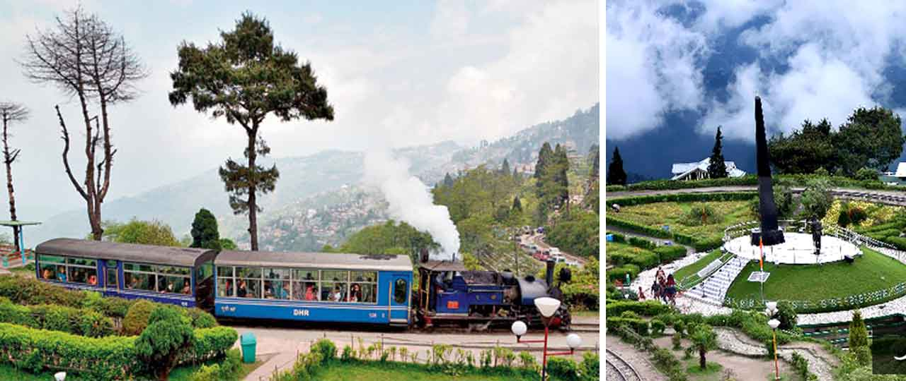
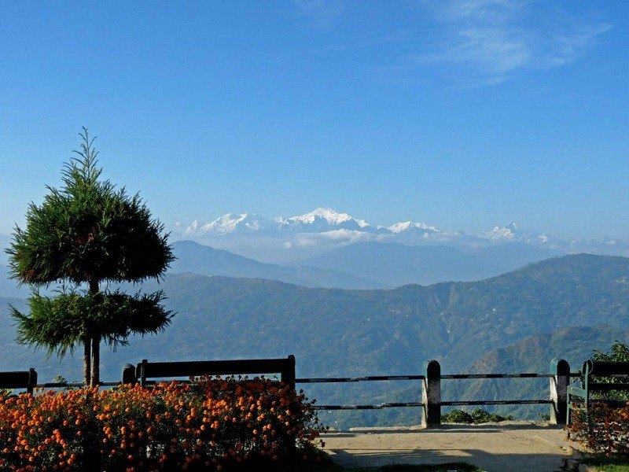
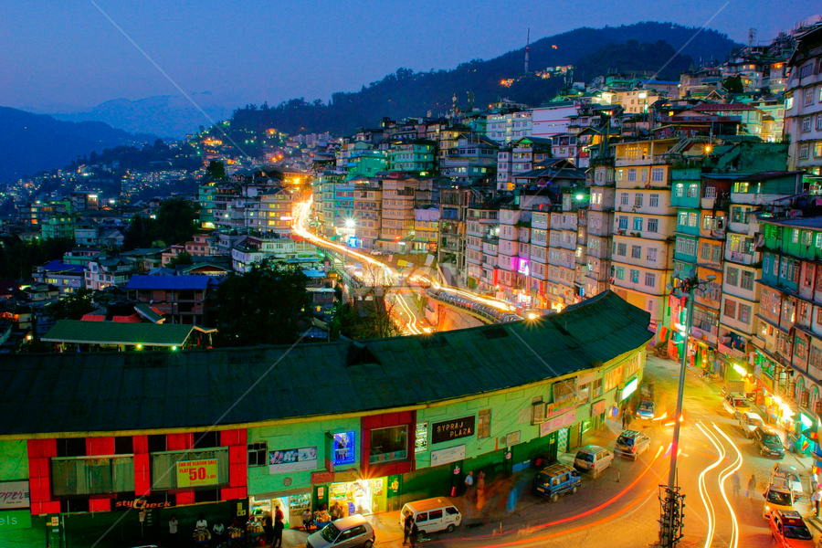
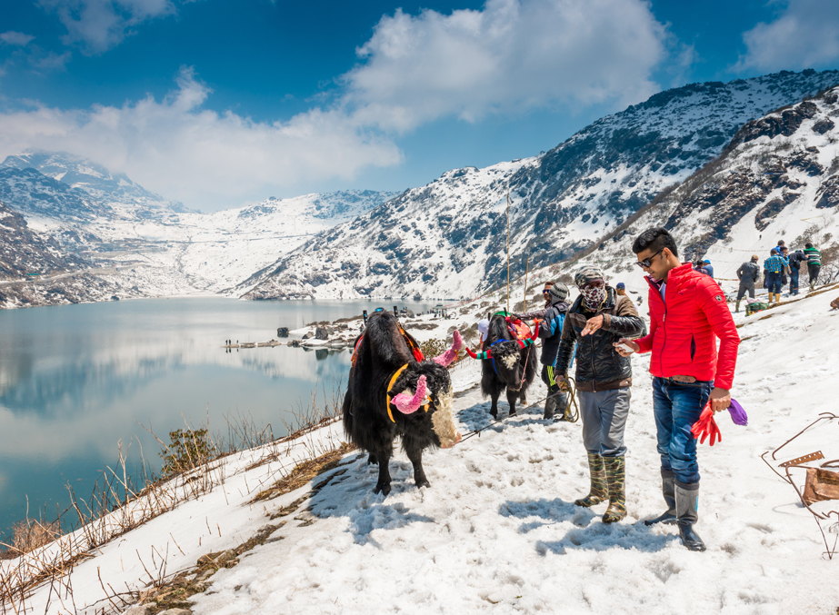
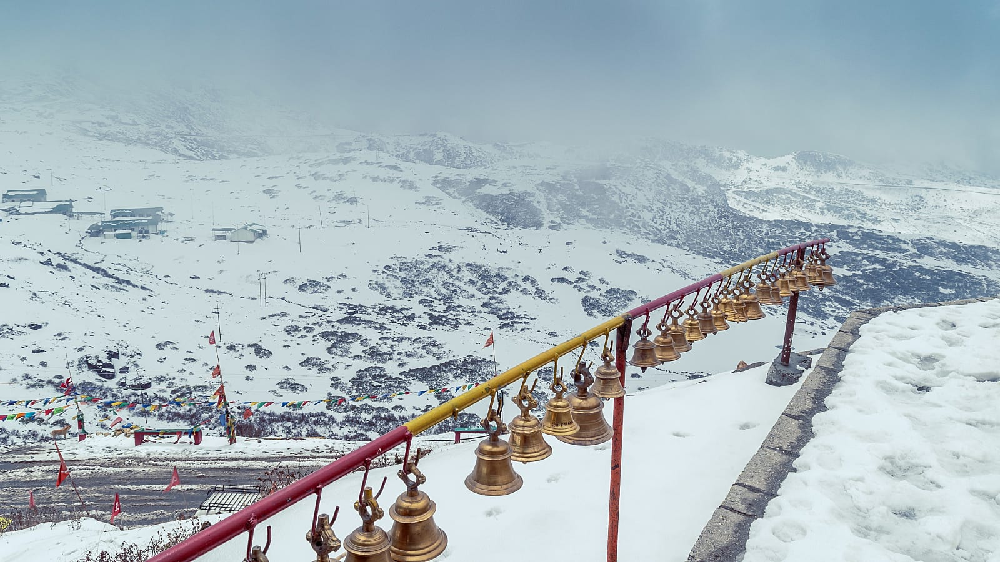

Our car driver will be there to receive you at New Jalpaiguri Railway Station (NJP) or Bagdogra Airport. You will be assisting for the transfer – Darjeeling – Nearly 105 kilometers 3 ? – 4 hours drive – At an height of 2123 meters / 70001 feet lies the land of breathtaking beauty, sloping tea gardens with spectacular views of the Mount Everest is the Queen of the hills – It is also home to the famous World Heritage train – The Darjeeling Himalayan Railway (DHR) – Check into our cheap hotels in Darjeeling in Evening free to roam around Mall or local Shopping center – Over Night stay at Darjeeling.

Early morning at around 3:45 AM drive to 8000 feet / 2440 meters through primitive forests of oak, magnolia to Tiger Hill to view sunrise over Kanchendzonga Peak (subject to clear weather) – On the way back visit Ghoom Monastery, Peace memorial & Batasia Loop – Back to hotel – After breakfast half day city package tour includes Padmaja Naidu Zoological Park, Himalayan Mountaineering Institute (Closed on Thursday), Ropeway, Tensing Gumpo Rock, Tibetan Refugee Self Help Center (Closed on Sunday), Tea Estate, Natural History Museum (Sunday Closed), Peace Pagoda – Back to hotel – Evening free to stroll around the Mall area or Chowk Bazaar – Overnight stay at Darjeeling.

Morning breakfast – Transfer to Gangtok – Nearly 135 Kilometers 3 – 3.5 hours drive – Gangtok – The capital of the 22nd State of India, Sikkim is one of the most beautiful hill station with varied options for tourist – It is known for the monastery, Orchids, High altitude Lake and butterflies – It has option for tourist of all ages – Check into Hotel – After lunch tour starts for visit to Directorate of Handicrafts & Handloom, Research Institute of Tibetology, Do Drul Chorten (Stupa), Enchey Monastery, White Hall, Flower Show etc – Back to hotel – Over Night stay at Gangtok.

Morning breakfast at hotel – Full day package tour to Tsomgo Lake & Baba Mandir nearly 40 kilometers and 2 hours drive along the Kyongnosla Alpine Sanctuary, the home to the red panda and the blood pheasant with Rhododendron and other alpine trees – Situated at an elevation of 3753 meters / 12310 feet – The Lake is oval shaped lake nearly 50 feet deep – Generally covered in snow for most of the year the year – This lake is home to the Brahmini ducks & many migratory birds – Nearby is the sacred Baba Mandir known to be a very holy site for all . Back to Gangtok – Evening free to roam around M G Road (Mall) or local Shopping center – Over Night stay at Gangtok


Morning breakfast – After breakfast transfer to New Jalpaiguri Railway Station (NJP)/Bagdogra Airport (IXB) – Nearly 120 kilometers 4 hours drive – Guest are advised to start early and not to rush – Forwarding Journey with sweet memories of Darjeeling Gangtok Tour Package.